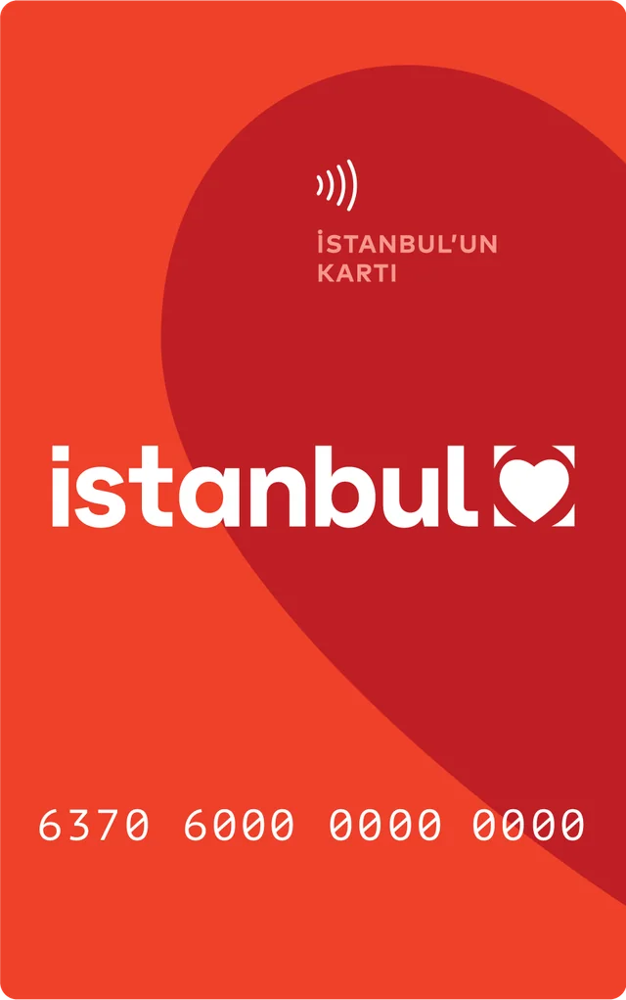
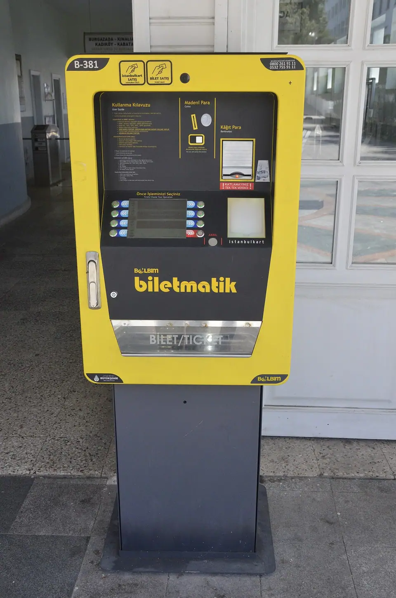
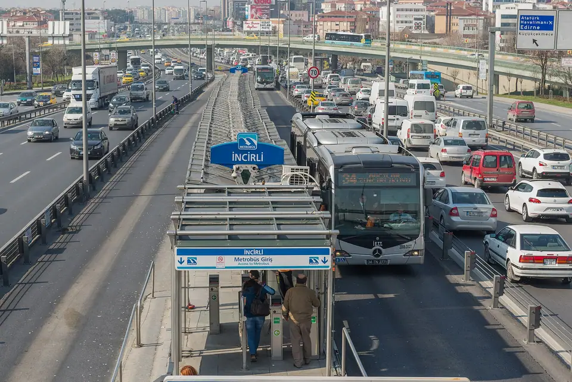
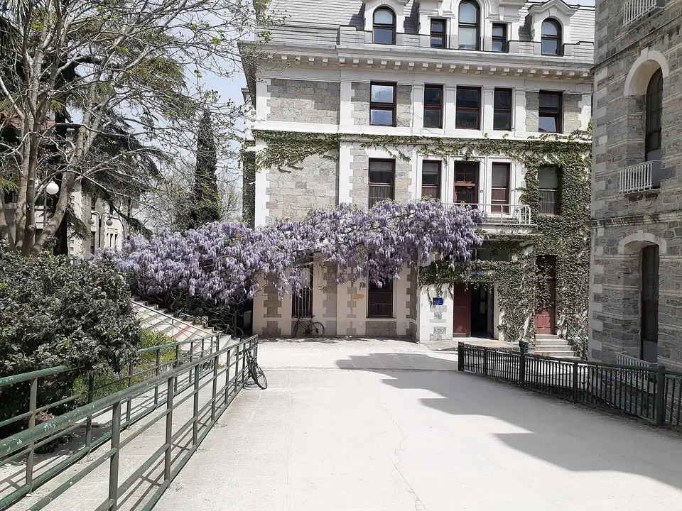

Transparency
Image credits
The photographs on this site are openly licensed images from Wikimedia Commons, used under their licences with credit to each author. A few decorative images were generated for this site and are labelled as illustrations wherever they appear.
Photographs
 Istanbul's Cihangir neighbourhood rising above the Bosphorus, with a city ferry crossing the water
Istanbul's Cihangir neighbourhood rising above the Bosphorus, with a city ferry crossing the water
By SegLig. Source on Wikimedia Commons. Licence: CC BY 4.0. Resized and converted to WebP for this site.
The standard İstanbulkart transport card
By Belbim A.Ş.. Source on Wikimedia Commons. Licence: Public domain. Resized and converted to WebP for this site. An İstanbulkart card reader (validator) at a public transport turnstile
An İstanbulkart card reader (validator) at a public transport turnstile
By Kurmanbek. Source on Wikimedia Commons. Licence: CC BY-SA 4.0. Resized and converted to WebP for this site.
A Biletmatik ticket and top-up machine for İstanbulkart
By Jelican9. Source on Wikimedia Commons. Licence: CC BY 4.0. Resized and converted to WebP for this site. A Şehir Hatları city ferry sailing on the Bosphorus
A Şehir Hatları city ferry sailing on the Bosphorus
By No-Discussion-1301. Source on Wikimedia Commons. Licence: CC BY 4.0. Resized and converted to WebP for this site. A metro train at the Haliç station platform above the Golden Horn
A metro train at the Haliç station platform above the Golden Horn
By My another account (talk). Source on Wikimedia Commons. Licence: CC0. Resized and converted to WebP for this site.
Metrobüs buses at İncirli station on their dedicated lanes
By Arild Vågen. Source on Wikimedia Commons. Licence: CC BY-SA 3.0. Resized and converted to WebP for this site. İETT city buses parked at the Kadıköy terminal
İETT city buses parked at the Kadıköy terminal
By Kuzel06. Source on Wikimedia Commons. Licence: CC BY-SA 4.0. Resized and converted to WebP for this site. A T1 tram passing with Hagia Sophia in the background
A T1 tram passing with Hagia Sophia in the background
By Calistemon. Source on Wikimedia Commons. Licence: CC BY-SA 4.0. Resized and converted to WebP for this site.
Wisteria in bloom on Boğaziçi University's south campus
By Furkan Akkurt. Source on Wikimedia Commons. Licence: CC BY-SA 4.0. Resized and converted to WebP for this site. The monumental entrance gate of Istanbul University on Beyazıt Square
The monumental entrance gate of Istanbul University on Beyazıt Square
By Medelam. Source on Wikimedia Commons. Licence: CC BY-SA 4.0. Resized and converted to WebP for this site. The Kadıköy lighthouse and waterfront on Istanbul’s Asian side
The Kadıköy lighthouse and waterfront on Istanbul’s Asian side
By Jorge Franganillo. Source on Wikimedia Commons. Licence: CC BY 4.0. Resized and converted to WebP for this site. A quiet residential street with apartment buildings in Kadıköy
A quiet residential street with apartment buildings in Kadıköy
By Raicem. Source on Wikimedia Commons. Licence: CC BY-SA 4.0. Resized and converted to WebP for this site. Shops and pedestrians on a street in Kadıköy
Shops and pedestrians on a street in Kadıköy
By Premeditated. Source on Wikimedia Commons. Licence: CC BY-SA 4.0. Resized and converted to WebP for this site.


.JPG){kind=link}


.jpg){kind=link}
Illustrative generated images
 Illustration: a person holding apartment keys over a signed rental agreement on a table
Illustration: a person holding apartment keys over a signed rental agreement on a table
Generated with Higgsfield (z_image model) for this site. Illustrative only; it does not show a real document, office, or event. Illustration: a student placing blank papers into a navy folder at a desk with a laptop and tea
Illustration: a student placing blank papers into a navy folder at a desk with a laptop and tea
Generated with Higgsfield (z_image model) for this site. Illustrative only; it does not show a real document, office, or event. Illustration: a smartphone and a plain SIM card on a café table with tea, a ferry visible through the window
Illustration: a smartphone and a plain SIM card on a café table with tea, a ferry visible through the window
Generated with Higgsfield (z_image model) for this site. Illustrative only; it does not show a real document, office, or event.- Illustration: students studying with laptops in a bright university library
Generated with Higgsfield (z_image model) for this site. Illustrative only; it does not show a real document, office, or event.
The İstanbulkart card image is published on Wikimedia Commons as a public-domain image credited to Belbim A.Ş., the card issuer. It is shown so you can recognise the card; this site is not affiliated with İstanbulkart, Belbim, or İBB. If you are a rights holder and see a problem, please tell us.